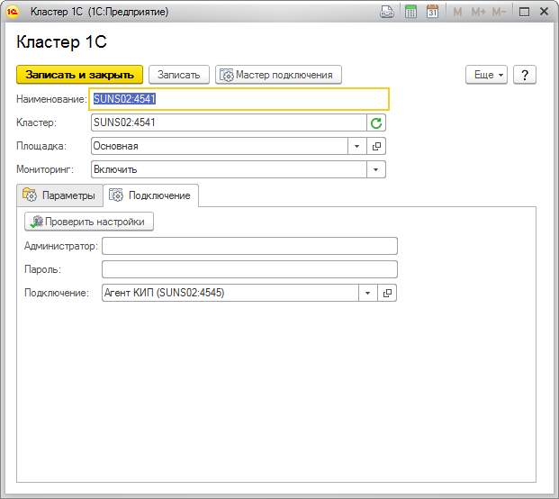
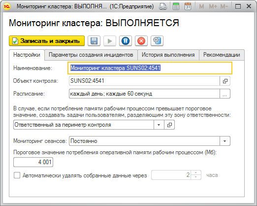

Отчет "Анализ потребления памяти"
Предназначен для выявления сеансов, потребляющих наибольший объем памяти за анализируемый период.
Для работы данного отчета необходимо:
- настроить административное подключение к кластеру 1С, используя RAS
- настроить контрольную процедуру Мониторинг кластера.
Центр Контроля Качества для подлючения к кластеру 1С может использовать два типа подключения:
- Непосредственное подключение к ras
- Подключение через агента КИП (агенту КИП так же требуется ras)
Пример настройки подключения к кластеру 1С

Для корректной работы отчета должен быть заполнен реквизит Подключение. Реквизит Мониторинг должен быть установлен в значение Включить.
Пример настройки контрольной процедуры "Мониторинг кластера"

Для корректной работы отчета контрольная процедура должна выполняться, реквизит Мониторинг сеансов должен быть установлен в значение Постоянно.